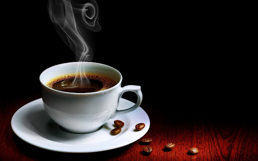
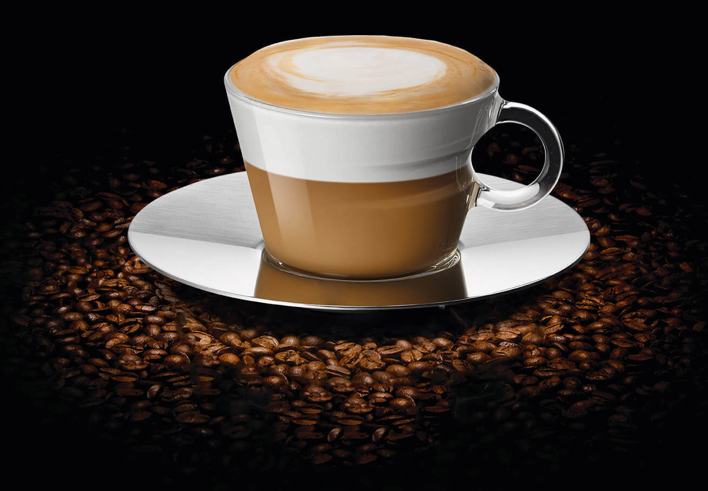
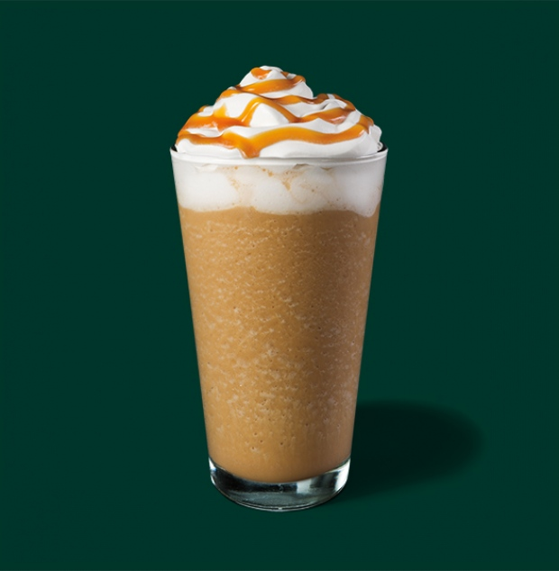
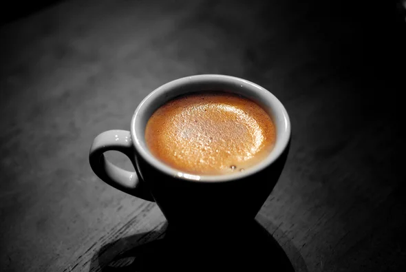
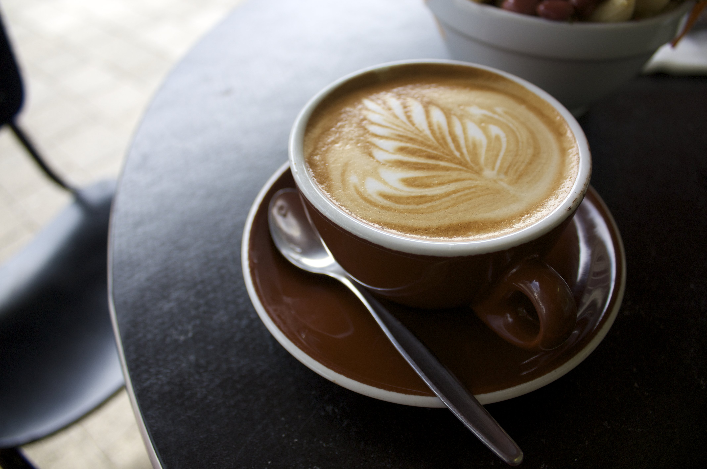
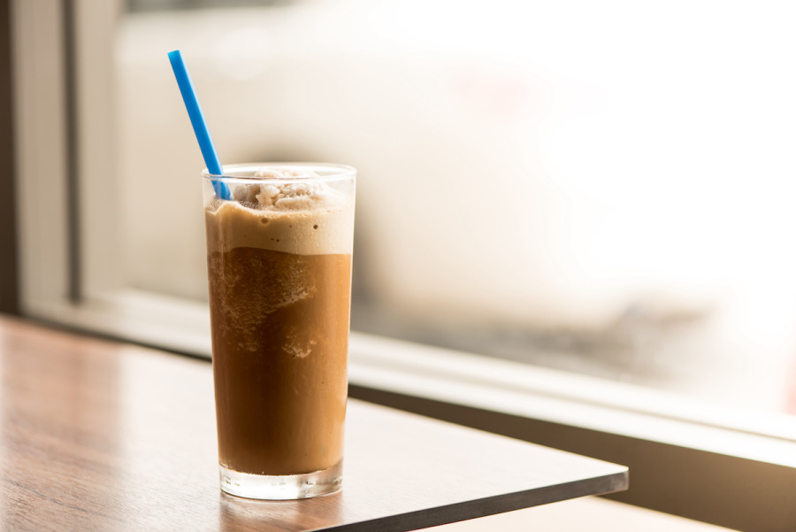
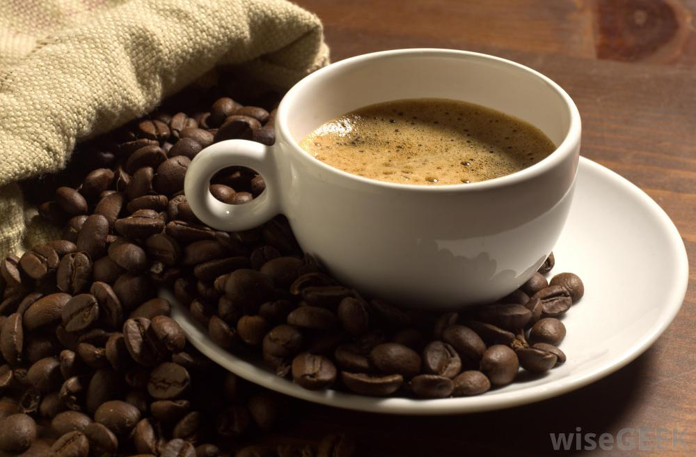
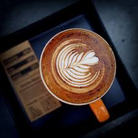

Affogato is an Italian coffee-based dessert. It usually takes the form of a scoop of semisoft cheese-flavored or vanilla gelato or ice cream topped or "drowned" with a shot of hot espresso.
Americano
Americano is a type of coffee drink prepared by diluting an espresso with hot water, giving it a similar strength to, but different flavor from, traditionally brewed coffee. The strength of an Americano varies with the number of shots of espresso and the amount of water added.

Capuccino

A cappuccino is an espresso-based coffee drink that originated in Italy, and is prepared with steamed milk foam. Variations of the drink involve the use of cream instead of milk, using non-dairy milk substitutes and flavoring with cinnamon or chocolate powder.
Caramel Frappe
Caramel syrup meets coffee, milk and ice for a rendezvous in the blender, while whipped cream and buttery caramel sauce layer the love on top. To change things up, try it affogato-style with a hot espresso shot poured right over the top.

Dalgona
Dalgona coffee is a beverage made by whipping equal parts instant coffee powder, sugar, and hot water until it becomes creamy and then adding it to cold or hot milk. Occasionally, it is topped with coffee powder, cocoa, crumbled biscuits, or honey.
Espresso
Espresso is a coffee-brewing method of Italian origin, in which a small amount of nearly boiling water is forced under 9–10 bars of pressure through finely-ground coffee beans. Espresso coffee can be made with a wide variety of coffee beans and roast degrees.

Flat White

A flat white is a coffee drink consisting of espresso with microfoam (steamed milk with small, fine bubbles and a glossy or velvety consistency).
Frappe
A frappé coffee, Greek frappé, Nescafé frappé, or just frappé is a Greek iced coffee drink made from instant coffee, water, sugar, and milk. The word is often written frappe.

Glace

It may be prepared either by brewing coffee in the normal way and then serving it over ice or in cold milk, or by brewing the coffee cold. In hot brewing, sweeteners and flavoring may be added before cooling, as they dissolve faster.
Latte
Caffè latte, often shortened to just latte in English, is a coffee drink of Italian origin made with espresso and steamed milk.

Mocha
Mocha is a JavaScript test framework for Node.js programs, featuring browser support, asynchronous testing, test coverage reports, and use of any assertion library.
Ristretto
Ristretto is a "short shot" of a more highly concentrated espresso coffee. It is made with the same amount of ground coffee, but extracted with a finer grind using half as much water. A normal short shot might look like a Ristretto, but in reality, would only be a weaker, more diluted, shot.